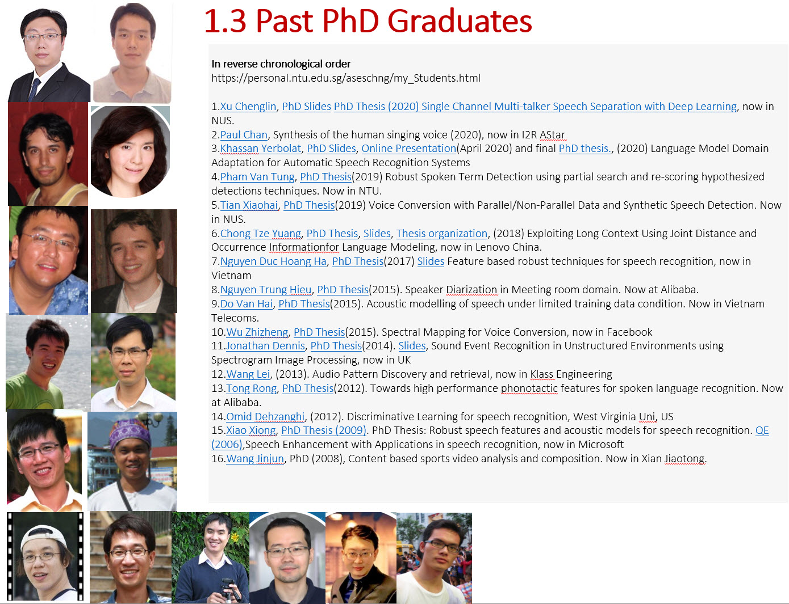

Section 2.4 Current PhD and Graduate Students
¶-
Chao Yi-Wen, Paralinguistics-enhanced LLM for Spoken Dialogue System (PhD reg Aug 2024, Supervisor: Chng Eng Siong, AStar: Lu Yanfeng) -
Liu Songting, Voice Conversion (MEng reg Aug 2024, Supervisor: Chng Eng Siong) -
Wu Yihao, Approaches for Diarization (MEng reg Aug 2024, Supervisor: Chng Eng Siong) -
Yeo Yue Heng, LLM for speech recognition (PhD reg Jan 2024, Supervisor: Chng Eng Siong, AStar Co-Sup:Tran Huy Dat), AStar Scholar -
Li Haoyang, Neural Text to Speech (PhD reg Aug 2023) -
Tuan Truong Duc, Robust Speaker verification and Deep Fake Detection under noisy and short duration scenario (reg Jan 2023, PhD) -
Fabian Ritter Gutierrez,End2End ASR for Language Learning (PhD, reg Aug 2022, AStar scholar) (co-supervised with AStar: Nancy Chen. QE (2024):Github of Thesis and Video -
Nikita Kuzmin, Disentaglement for Speaker verification and privacy (PhD, reg Aug 2022, AStar scholar) (co-supervised with AStar: Lee Kong Aik.QE: 2025 -
Kwok Chin Yuen, Acoustic modelling of targetted domain speech (Children's speech acoustic modelling) (reg Aug 2021, MEng, converted to PhD program, Aug 2022) -
Hu Yuchen 胡宇晨, robust End-to-End ASR (reg Aug 2021, MEng, converted to PhD program, Aug 2022, Thesis submitted: June 2025).QE Slides (2023),
Subsection 2.4.1 Current Co-Sup: PhD Students
¶-
Ashutosh Anshul, Multi-modal Deep Fake classification and detection (reg Jan 2024, Supervisor: Deepu Rajan, Co-Sup:Chng Eng Siong) -
Shreyas Gopas, Speech Recognition using LLM for under-resourced languages (reg Jan 2024, Supervisor: Quek Hiok Chai, Co-Sup:Chng Eng Siong)
Subsection 2.4.2 Current MEng and Masters Program Students
¶-
Wu Yihao, Robust diarization for large scale meeting scenario (MEng reg Aug 2024, Supervisor: Chng Eng Siong) -
Ni Yunyi, VoiceForge: A Text-Driven Character Voice Generation System for Narrative Content Creation (MSAI reg Aug 2024, Supervisor: Chng Eng Siong) -
Thirunavukarasu Suresh Sathya Krishnan, Advancing Dialogue Systems: Synthetic Dialogue Generation and Code-Switching in LLMs (MSAI reg Aug 2024, Supervisor: Chng Eng Siong)
Subsection 2.4.3 Collaborating graduate Student (China)
¶Every year, we will host graduate students from China. We have hosted students from China Scholarship Council (program), Peking University, Xinjiang University, Hunan University, Tianjin University and Northwestern University. The visits have been very rewarding, and many publications have come out of these visits. We hope to see more such outstanding students, so do apply!
-
Yang Yuhang(2023 June~, PhD student (Hunan University), China), LLM ASR -
Zhang Xiangyu(2023 June~, PhD student (UNSW, Australia), Depression classification -
Chen Weiguang(2022 June~, PhD student (Hunan University), Diarization using multi-channel approaches -
Yao Jixun(2023 Oct~ Oct 2024, AISG NUS visitor), PhD student (Northwestern Poly, China), Speech Enhancement and TTS -
Le Yuquan(2023 Oct~ Oct 2024, CSC visitor), PhD student (Hunan University, China), LLM for Legal -
Luo Juan(2023 Oct~ Oct 2024, CSC visitor), PhD student (Hunan University, China), Audio event detection and classification -
Zhang Zizheng(2023 June~ Jun 2024, AISG remote), Masters student (Peking University, China), Speech Separation,github -
Zheng Haorui(2024 June~ , AISG remote), Masters student (Peking University, China), Speaker Diarization with Speech Separation -
Bo Han(2023 Oct ~Oct 2024, CSC visitor), PhD student Zhejiang Uni, China), Deep Fake TTS audio generation
Subsection 2.4.4 Past PhD Students
¶
-
Yip Jia Qi, From Time-domain to Generative Speech Separation (reg Aug 2021, Alibaba scholar PhD)(Thesis (final): June 2025) -
Zou HeQing, Multimodal Machine Learning (reg Jan 2021, submitted June 2025, PhD) (Sup:Deepu Rajan, Co-Sup: Chng Eng Siong) -
Chen Chen, Advancing Speech-to-Text Adaptation for Large Speech Models (PhD reg Jan 2021) (defended: June2025)Google Scholar,(Thesis final: June 2025) -
Ng Dian Wen, Optimizing Speech Representation Learning for Enhanced Noise Robustness in Downstream Applications (PhD reg Jan 2021, graduated 2025 May, Alibaba scholar PhD)(Thesis :May 2025) -
Rae Koh Jia Xin, Singapore English (reg Aug 2019, PhD) (graduated 2025) (Sup: Tan Ying Ying (HSS), Co-Sup: Chng Eng Siong) -
Andrew Koh Jin Jie, Sequence to Sequence Machine Learning (reg Aug 2019, PhD, graduated 2023) -
Zhao Yingzhu, End-to-End speech recognition (reg Jan 2019, PhD, graduated May 2023).Oral Defence rehearsalPhD SlidesPhD reportPhD latex folder -
Hou Nana, Robust LVCSR for air traffic control speech (reg Jan 2017, PhD, submitted Jan 2022) -
Xu Chenglin,PhD SlidesPhD Thesis(2020) Single Channel Multi-talker Speech Separation with Deep Learning -
Paul Chan, Synthesis of the human singing voice (2020) -
Khassan Yerbolat,PhD Slides,Online Presentation(April 2020) and finalPhD thesis., (2020) Language Model Domain Adaptation for Automatic Speech Recognition Systems. -
Pham Van Tung,PhD Thesis(2019) Robust Spoken Term Detection using partial search and re-scoring hypothesized detections techniques. Now in NTU. -
Tian Xiaohai,PhD Thesis(2019) Voice Conversion with Parallel/Non-Parallel Data and Synthetic Speech Detection. Now in NUS. -
Chong Tze Yuang,PhD Thesis,Slides,Thesis organization, (2018) Exploiting Long Context Using Joint Distance and Occurrence Informationfor Language Modeling. -
Nguyen Duc Hoang Ha,PhD Thesis(2017)SlidesFeature based robust techniques for speech recognition. -
Nguyen Trung Hieu,PhD Thesis(2015). Speaker Diarization in Meeting room domain. Now at Alibaba. -
Do Van Hai,PhD Thesis(2015). Acoustic modelling of speech under limited training data condition. Now in Vietnam Telecoms. -
Wu Zhizheng,PhD Thesis(2015). Spectral Mapping for Voice Conversion. -
Jonathan Dennis,PhD Thesis(2014).Slides, Sound Event Recognition in Unstructured Environments using Spectrogram Image Processing. -
Wang Lei, (2013). Audio Pattern Discovery and retrieval. -
Tong Rong,PhD Thesis(2012). Towards high performance phonotactic features for spoken language recognition. Now at Alibaba. -
Omid Dehzanghi, (2012). Discriminative Learning for speech recognition, U of Michigan -
Xiao Xiong,PhD Thesis (2009). PhD Thesis: Robust speech features and acoustic models for speech recognition.QE (2006),Speech Enhancement with Applications in speech recognition, now in Microsoft, US since Apr 2017 -
Wang Jinjun, PhD (2008), Content based sports video analysis and composition. Now in Xian Jiaotong.
Subsection 2.4.5 Past MEng Students
¶-
Azmat Adnan,(MSAI Thesis, 2024) Robust Diarization -
Tanmay Surana,Deep Learning-based Text Augmentation for Named Entity Recognition(reg Aug 2021, MEng, completed Oct 2023) -
Prachaseree Chaiyasait, Adaptation of Language Models via Text Augmentation (reg Aug 2021, MEng, submitted Jul 2023, completed Oct 2023) -
Kyaw Zin Tun, Name entity recognition for chatbot applcications(MEng, started Aug 2020, submitted thesis Aug 2022) -
Xue Fuzhao, Information extraction from text (MEng 2020) -
Lim Zhi Hao, (MEng 2020), Anti-Spoofing Techniques for Robust Speaker VerificationThesis (2020) -
Ho Thi Nga, (MEng 2019), Sentence unit detection for automatic speech transcripts using lexical information -
Leow Sujun, (MEng 2018), Image Processing Technique for Speech Signal Processing -
Nguyen Quy Hy, (MEng 2017), Voice conversion using DNN -
Steven Du, (MEng 2015), Robust Front End for Speaker Verification -
Terrence Ng Wen Zheng,Thesis,(MEng 2014), Sound Event recognition in home environment -
Chen Wenda, (MEng 2014),Computer Assisted Language Learning -
Ben Pham Chau Khoa,Thesis,(MEng 2012), Robust VAD - Eugene Koh, (MEng 2009), Speaker Diarizaton
Subsection 2.4.6 Past MSAI Students and Other collaboration students
¶-
Chen Yanru(2024 Jan~), Masters Data Science, Classification of Depression Syndrome by Deep Learning -
Qin Xiaokai(2023 Aug~), MSAI student, Deepfake audio generation using voice conversion -
Azmat Adnan(Reg 2023 Aug, completed Aug 2024), MSAI student, DNN Approaches for noisy speech diarization -
Zhuo Ning(Reg 2023 Aug, completed Aug 2024), Masters Cybersecurity student, Deep Fake Corpus developmenet and detection -
Jiang Yufei(2022 Aug~ 2023 Aug), MSAI (NTU), Adopting Neural Translation Model in Data Generation for Inverse Text Normalization -
Liu Jiaxing(2021 Oct ~2023 Oct, CSC visitor, PhD student Tianjin University, China), Multi-modal emotion recognition -
Cheng Qi(2021 Oct ~2022 Oct, CSC visitor, PhD student Harbin Engineering Uni, China), Graph Neural Network for Lattice rescoring -
Samuel Samsudin Ng, (MSAI 2020-S1), Speech emotion recognition with AlexNet and Fully convolutional network,Sam's MSAI Thesis,github depository,kaggle iEmoCap -
Cheung Chin Ka, (MSAI 2020-S1), Acoustic Scene Classication with cutting edge hyperparameter tuning tool,Andy's MSAI Thesis -
Liu Bozhong, (MSAI 2020-S2), Wakeup keyword detection for far-field microphone array using end to end framework
Subsection 2.4.7 Past MSAI Students and Other collaboration students
¶-
Zhao Yang(2021 Oct ~2023 Oct, CSC visitor, PhD student Xian JiaoTong Uni, China), Semi/Self supervised representation for speech recognition -
Peng Yizhou(2020 June ~2022 June, Masters student Xinjiang, China), ASR development (Kaldi and End2End) -
Yang Yuhang(2021 June~2023 June, Masters student Xinjiang, China), WeNet ASR, End2End ASR -
Guo Yachao(2021 June~2023 June, Masters student Xinjiang, China), End2End Hotword LM Adaptation